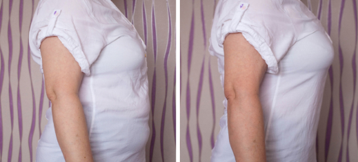

Kako brzo smanjiti visoki nivo šećera u krvi?
Miloš Popović -
Smatra se da je visoki nivo šećera u krvi (hiperglikemija) prokletstvo ljudi sa dijabetesom. Ali ni zdravi ljudi nisu imuni na ovu pošast.
Ako nemate dijabetes, visoki nivo šećera u krvi može da dovede do začepljenja krvnih sudova i ireverzibilnih metaboličkih problema. Prekomerna težina bez obzira na normalnu ishranu i nemogućnost gubljenja kilograma uvek su posledice hiperglikemije.
Faze hiperglikemije
Hiperglikemija je dvostruko opasnija za pacijente sa dijabetesom. Ako šećer u krvi skoči na nivo od 20 jedinica, vid počinje značajno da se pogoršava, krvni pritisak raste, a udovi trnu i otiču. U težim slučajevima razvija se gangrena, a bubrezi prestaju da funkcioniraju normalno. Pojavljuju se dijabetični čirevi.
Ali ako nivo glukoze (šećera) u krvi stalno držite na niskom nivou, možete se osećati zdravo celi život.
Najbolji tretman hiperglikemije je prevencija. Prvo, to podrazumeva ograničavanje konzumiranja slatkiša i određenog voća. Ali svi smo mi ljudi. Čak i ako imate čeličnu volju, ne možete uvek da odolite ukusnoj hrani.
Tada narodni lekovi dolaze u pomoć. Ako su pravilno odabrani i pripremljeni, smanjuju šećer, pomažu u normaliziranju vaše dobrobiti i deluju bez lekova, te minimiziraju rizik od dijabetičkih komplikacija (prekomerna težina, oticanje, umor, žeđ, trofični čirevi, slepoća itd.), pa čak možete i da smršate bez pridržavanja dijete.
Indikacije za hipoglikemijsku fitoterapiju:
- - dijabetes tipa 1 i 2;
- - hronični pankreatitis, bol u gušterači;
- - višak kilograma (5 ili više kilograma viška);
- - genetika (ako vaši rođaci imaju dijabetes);
- - nizak imunitet, česte prehlade;
- - bolesti bubrega i jetre;
- - hronični stres;
- - nepravilna ishrana, ljubav prema slatkišima.
Top 5 biljaka za smanjenje šećera
Listovi breze
Listovi breze klasičan je način smanjenja šećera u krvi. Mekani listovi u maju, još uvek malo lepljivi, imaju moćna adstringentna i diuretička svojstva.
Višak šećera izlučuje se zajedno sa urinom, što je dobro ne samo za ljude sa dijabetesom, već i za sve koji vole bombone i kolače. Listovi se pripremaju u maju - početkom juna, kada još nisu potpuno otvoreni. Važno je ne propustiti ovaj trenutak. Zrelo lišće breze nemoćno je protiv glukoze zbog niskog sadržaja vitamina C i retinoične kiseline.
Kleka
Kleka zauzima drugo mesto po svojstvima smanjenja šećera. Čak i ako ste pojeli čokoladicu, neće biti nikakvih posledica ako pojedete šaku ovih bobica.
Kleka je bogata flavonskim glikozidima koji neutrališu glukozu i stabilizuju rad gušterače. Ove bobice su ključne za ljude koji dugo imaju dijabetes jer ubrzavaju zaceljivanje ogrebotina i sprečavaju stvaranje trofičnih čireva. Za lečenje su pogodne i sveže i suve bobice. Možete da ih jedete, pravite esencije, napitke i lekovite čajeve.
Borovnice
Ove slatke bobice možete da jedete čak i kod naprednih oblika dijabetesa. Smanjuju šećer u krvi, poboljšavaju protok krvi i pomažu u zaštiti vida.
Borovnice sadrže mirtilin, supstancu sličnu insulinu koja stabilizuje rad gušterače i uklanja zagušenja u žučnim kanalima. Borovnice su korisne, bilo da su sveže i suve. Ove bobice možete dodati čaju, sa njima praviti deserte, esencije i nezaslađene sokove.
Mahune pasulja
Ako volite jela sa pasuljom, nemojte da bacate mahune. Možete da ih osušite, sameljete i sa njima pravite čajeve, esencije i napitke.
Sadrže enzime za smanjenje šećera koji deluju čak i kod teških poremećaja ishrane. A hemiceluloza, kojom su mahune pasulja toliko bogate, pomaže kod mršavljenja i održavanja težine normalnom.
Peršun
Osobama sa dijabetesom dozvoljeno je da koriste neograničene količine peršuna. Smanjuje šećer u krvi i urinu, uklanja višak tečnosti, uklanja oticanje i ublažava upalu,
sprečava nastanak raka, poboljšava vid, jača kosti. Osim toga, možete da ga uzgajate kod kuće. Ali na prazan želudac i u velikim količinama peršun daje suprotan efekat - navalu glukoze u krvi. Zato količina za osobe sa dijabetesom nije veća od 20 ml na dan.
Čime zameniti lekovito bilje ako imate dijabetes?
Za lečenje i prevenciju hiperglikemije, fitoterapija je prva metoda. Ali to ne znači da sada celi život morate da provedete sakupljajući, sušeći, meljući, kuvajući i donoseći darove prirode u vašu kuhinju. Ne morate. Pogotovo ako živite u gradskom stanu ili u teškim klimatskim uslovima. Naravno, u 21. veku uvek možete da pronađete alternativu.
Biljni čaj Diatea pravi je dar za ljude sa dijabetesom, kao i za one koji ne žele da dobiju ovu bolest. Sadrži sve pomenute biljke koje sagorevaju šećer, a obogaćen je plodom johe i kineskim cimetom. Ove biljke uklanjaju suvišnu tečnost iz vašeg tela i pomažu vam da izgubite 15 kg u roku od 1 meseca.
Čaj Diatea pojačava snažno delovanje lišća breze i ispire višak šećera i holesterola zajedno sa vodom. Sušeni kineski cimet smanjuje masno tkivo, ubrzava metabolizam i bori se protiv umora.
Taj proces započinje prvom šoljom. 1-2 sata kasnije, šećer u krvi se smanjuje za trećinu. I uz redovan unos čaja Diatea vaše telo jednostavno neće primetiti niti jednu kiflicu ili slatkiš - višak glukoze izlaziće zajedno sa urinom.
Čaj Diatea je jednostavno napraviti. Ne trebate ništa da sušite ili meljete. Samo dodajte vruću vodu, promešajte i pijte ga kao obični čaj.
Studije su potvrdile da ako osoba pije 2-3 šolje čaja Diatea na dan 3-4 nedelje, nivo šećera u krvi će brzo da se normalizuje, pa čak i smanji. A ovo je najvažnije za ljude sa dijabetesom tipa 1 i tipa 2.
Čaj Diatea možete da kupite na zvaničnom sajtu proizvođača, bez maloprodajnih marži. Troškovi isporuke takođe idu na teret kompanije dobavljača. A sa novcem koji uštedite uvek se možete lečiti bez straha od posledica - za vaše zdravlje će se pobrinuti Diatea !
Naruči
Komentari
Todor piše
Pa šta, mogu li da pijem ovaj čaj i jedem čokolade?
Saša piše
Ako imate dijabetes, bolje je jesti čokoladu sa fruktozom. A ovaj čaj pomaže u mršavljenju, to je činjenica! Izgubio sam 15 kg u mesec dana sa ovim čajem . Ipak sam morao često da koristitm wc
Janko piše
O lišću breze - slažem se 100%! Puno je posla oko njega: pronađi pravo vreme, sakupljaj, suši... Ali trud se isplati: dve nedelje i šećer mi je normalan
Bojana piše
I zašto se mučiti ako možete da ga kupite u gotovom proizvodu?
Katarina piše
Da li je neko pio ovaj čaj ? Da li je zaista moguće smršati sa njim? Imam 102 kg, imam dijabetes tipa 2, dijete mi uopšte ne pomažu
Jelena piše
Ja lično sam smršala. Ne previše, samo 5 kg. Ali imam i dijabetes, jako je teško izgubiti čak i 5 kg. I ovoliko sam oslabila za 2 nedelje!
Marija piše
Da li ste probali da se bavite sportom? Možda biste smršali bez čarobnih čajeva i tableta
Nikola piše
Čaj je odličan! Pre njega jedva da sam nešto jeo, a šećer mi je i dalje bio visok. Pio sam ga nedelju dana i sada je sve normalno! Merač glukoze u krvi neće lagati
Vesna piše
Da, tako je. Bilje leči bolje od tableta!